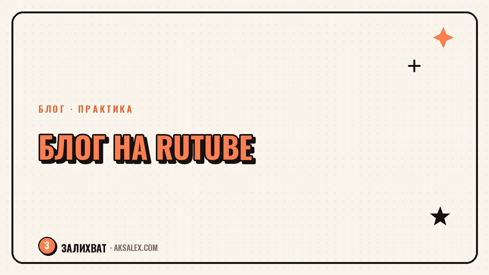

Как вести блог в Rutube: с чего начать

Rutube перестал быть запасным вариантом и превратился в площадку, где у блогеров реально растёт аудитория - особенно у тех, кто ведёт контент на русском языке и ориентируется на зрителя внутри страны. Если ты уже снимаешь видео для других платформ или только планируешь начать, Rutube стоит рассмотреть как ещё один канал роста. Разберём, как завести канал правильно с первого дня и не наделать типичных ошибок новичка.
Почему стоит завести канал на Rutube
У площадки растущая аудитория, которая активно ищет альтернативу привычным сервисам, и конкуренция внутри многих тематических ниш пока ниже, чем на крупных зарубежных площадках. Это значит, что у нового канала больше шансов попасть в рекомендации и набрать первых подписчиков быстрее, чем на перегретой платформе.
Вторая причина - формат. Rutube поддерживает и длинные видео, и короткие вертикальные ролики, поэтому туда можно переносить контент, который ты уже снимаешь для других соцсетей, почти без переделки. Это снижает порог входа: не нужно выстраивать с нуля новую контентную стратегию, достаточно адаптировать существующую.
Кому точно стоит попробовать
Площадка особенно подходит блогерам, которые снимают обучающий, развлекательный или нишевой контент на русском языке, а также тем, кто хочет диверсифицировать площадки и не зависеть от одной соцсети. Если вся аудитория сосредоточена в одном месте, потеря доступа к нему означает потерю всего - несколько площадок снижают этот риск.
Как настроить канал с нуля
Начало работы на Rutube похоже на запуск канала на любой видеоплатформе: нужна регистрация, оформление профиля и первые ролики. Разница в деталях, которые влияют на то, как быстро канал начнёт набирать просмотры.
- Заполни описание канала полностью - платформа использует его для поиска и рекомендаций
- Загрузи аватар и обложку канала, которые читаются и в маленьком размере на телефоне
- Укажи тематику канала точно, а не обобщённо - это влияет на то, кому его покажут
- Добавь ссылки на другие соцсети в описание, чтобы переносить аудиторию между площадками
- Опубликуй первые 3-5 роликов сразу, а не один - так канал выглядит живым, а не брошенным
Отдельно стоит продумать название канала заранее: оно должно быть понятным и легко находимым в поиске, а не только красивым. Если название канала совпадает с тем, что уже используется в других соцсетях, зрителям проще тебя найти и узнать.
Какие форматы работают лучше всего
На старте не нужно изобретать уникальный формат специально для Rutube - логичнее перенести то, что уже доказало эффективность на других площадках, и посмотреть, как реагирует аудитория здесь. Короткие вертикальные ролики хорошо работают на набор первых просмотров, а длинные видео удерживают зрителя и работают на углубление отношений с аудиторией.
Как адаптировать уже готовый контент
Если ролик уже снят для другой площадки, достаточно проверить соотношение сторон и длину, обновить обложку под формат Rutube и написать заголовок с учётом поиска на этой платформе - он может отличаться от заголовка, который сработал в другом месте. Полностью переснимать контент под каждую площадку не требуется.
Площадка прощает новичков, которые пробуют и ошибаются, но не прощает брошенные каналы с тремя видео за полгода. Регулярность значит больше, чем идеальное первое видео.
Продвижение канала без бюджета
На старте продвижение держится на трёх вещах: регулярности публикаций, точном заголовке с описанием и кросс-постинге из других соцсетей. Без хотя бы одного из этих элементов рост канала замедляется, даже если контент качественный.
Заголовок и описание ролика стоит писать с учётом того, что их читает не только человек, но и алгоритм поиска платформы. Указывай в заголовке суть ролика прямо, а не метафорично, и добавляй в описание ключевые слова по теме - это помогает ролику попадать в поиск по запросам зрителей.
- Публикуй с одинаковой периодичностью, даже если это раз в неделю
- Анонсируй новые ролики в других соцсетях с прямой ссылкой на Rutube
- Отвечай на комментарии первые недели - это повышает вовлечённость канала
- Следи за статистикой просмотров и дорабатывай заголовки, которые не сработали
Типичные ошибки новичков на Rutube
Большинство ошибок повторяются из блога в блог независимо от площадки, и Rutube не исключение. Разберём самые частые, чтобы не тратить время на их повторение.
| Ошибка | Почему мешает | Что сделать вместо этого |
|---|---|---|
| Один ролик и долгая пауза | Канал выглядит брошенным, алгоритм не успевает его показать | Публиковать серию роликов с самого начала |
| Общее название канала без тематики | Сложно найти в поиске и понять, о чём канал | Указать тематику явно в названии и описании |
| Копия заголовка с другой площадки без изменений | Поиск на Rutube работает по своим запросам | Адаптировать заголовок под поиск этой платформы |
| Игнорирование комментариев | Снижается вовлечённость и доверие аудитории | Отвечать хотя бы на первые комментарии под роликом |
Частые вопросы
Нужно ли снимать отдельный контент специально для Rutube?
Нет, можно переносить ролики, которые уже снял для других площадок, подправив формат, обложку и заголовок под поиск этой платформы. Отдельный уникальный контент имеет смысл делать позже, когда станет понятно, что аудитория на Rutube реагирует иначе.
Сколько времени занимает набрать первых подписчиков на Rutube?
Это сильно зависит от темы, регулярности публикаций и качества заголовков, поэтому точных сроков назвать нельзя. Регулярные публикации несколько раз в неделю обычно дают заметный рост быстрее, чем нерегулярные загрузки раз в месяц.
Можно ли вести канал на Rutube параллельно с другими соцсетями?
Да, и это даже рекомендуется - кросс-постинг снижает зависимость от одной площадки и позволяет переносить уже снятый контент без лишней работы. Главное указать ссылки на другие каналы в описании, чтобы аудитория могла перейти между ними.
Какой формат видео лучше для старта на Rutube: короткий или длинный?
Короткие ролики проще заходят новым зрителям и быстрее набирают первые просмотры, а длинные видео работают на удержание и углубление отношений с постоянной аудиторией. На старте разумно пробовать оба формата и смотреть на реакцию.
Что важнее для роста канала: частота публикаций или их качество?
Оба фактора важны, но регулярность часто решает быстрее на старте, потому что алгоритм и зрители лучше реагируют на предсказуемый канал. Как только появляется стабильный график, можно постепенно повышать качество каждого отдельного ролика.
Раз тема оказалась полезной, вот что почитать следующим. Почему трудно отказывать и как научиться говорить нет без чувства вины.
Читать статью →а не вручную